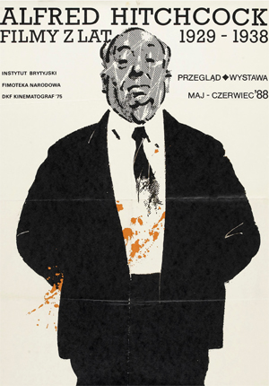

Alfred Joseph Hitchcock was born in Leytonstone, Essex, England. He was the son of Emma Jane (Whelan; 1863 - 1942) and East End greengrocer William Hitchcock (1862 - 1914). His parents were both of half English and half Irish ancestry. He had two older siblings, William Hitchcock (born 1890) and Eileen Hitchcock (born 1892). Raised as a strict Catholic and attending Saint Ignatius College, a school run by Jesuits, Hitch had very much of a regular upbringing. His first job outside of the family business was in 1915 as an estimator for the Henley Telegraph and Cable Company. His interest in movies began at around this time, frequently visiting the cinema and reading US trade journals.
It was around 1920 when Hitchcock joined the film industry. He started off drawing the sets (he was a very skilled artist). It was there that he met Alma Reville, though they never really spoke to each other. It was only after the director for Always Tell Your Wife(1923) fell ill and Hitchcock was named director to complete the film that he and Reville began to collaborate. Hitchcock had his first real crack at directing a film, start to finish, in 1923 when he was hired to direct the film Number 13 (1922), though the production wasn't completed due to the studio's closure. Hitchcock didn't give up then. He directed a film called The Pleasure Garden (1925), a British/German production, which was very popular. Hitchcock made his first trademark film, The Lodger (1927) . In the same year, on the 2nd of December, Hitchcock married Alma Reville. They had one child, Patricia Hitchcock who was born on July 7th, 1928. His success followed when he made a number of films in Britain such as The Lady Vanishes (1938) and Jamaica Inn (1939), some of which also gained him fame in the USA.
